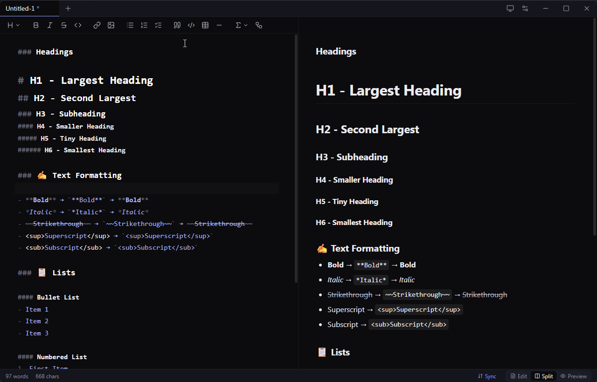
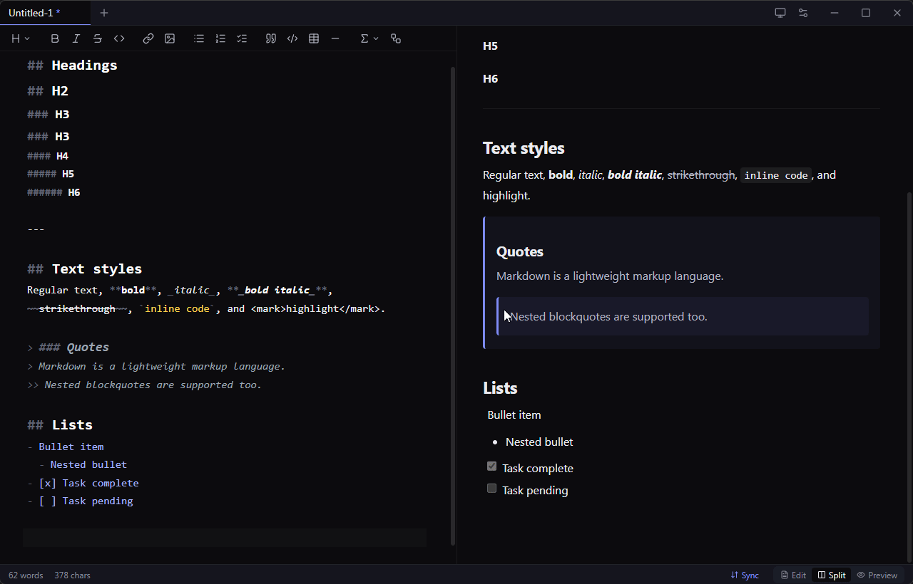
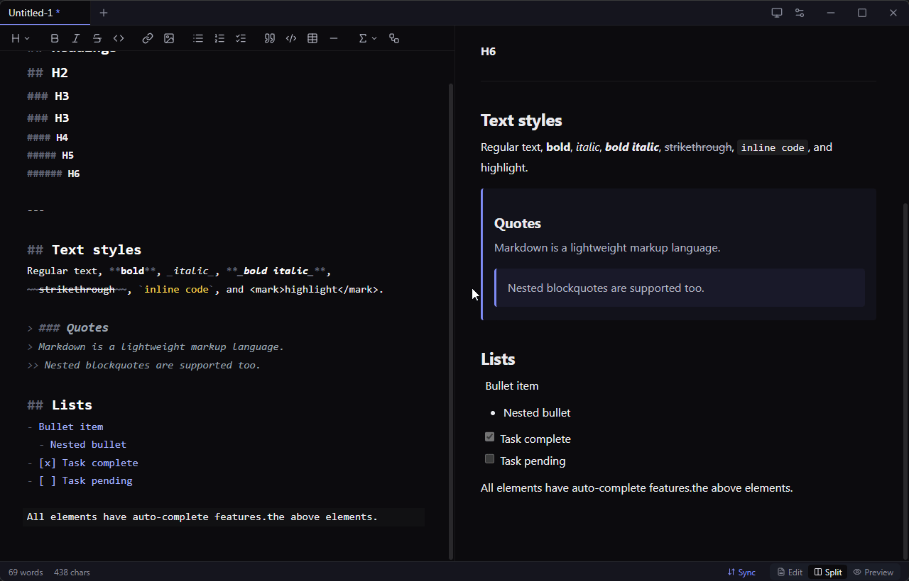
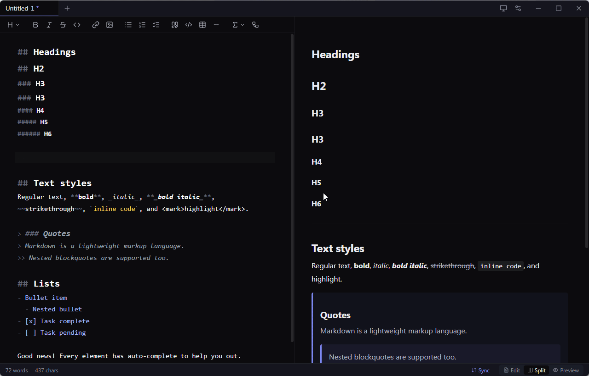

A beautiful Markdown editor,
built AI-native from day one.
Marky is a desktop Markdown editor with first-class AI assistance, pixel-perfect PDF export, and a multi-tab side-by-side workspace. This page documents the system design and architecture behind it — a deep look at how an Electron app with three processes, four AI providers, and a unified markdown pipeline fits together.
What problem does Marky solve?
Existing markdown editors fall into two camps. Web-based tools like StackEdit are gorgeous but live in a browser tab and can't produce pixel-perfect PDFs. Native tools like Typora are powerful but predate the AI inflection point. Marky aims for the intersection: a polished native desktop app where AI assistance is a first-class feature, the rendered preview is the source of truth for export, and the UX feels modern without being noisy.
Multi-tab, side-by-side
Each open file gets its own editor, preview, view-mode, and scroll position. Dirty indicator, drag-reorder, middle-click close, command palette.
AI on demand
Ghost-text continuations on Ctrl+J, Gmail-style selection refine
toolbar with streaming Accept / Reject / Try-again. Four providers.
Pixel-perfect PDF
Export uses the same Chromium that renders the preview — no second markdown engine to drift. What you see is what your PDF is.
Privacy-first keys
API keys never reach the renderer. Encrypted at rest with the OS keychain
(DPAPI / Keychain / libsecret) via Electron's safeStorage.
See it work
Short captures of the features that don't translate to a screenshot. Drop your own
GIFs into docs/assets/ with the filenames below to replace the
placeholders.




Three processes, one app.
Marky follows Electron's standard tri-process model with strict security defaults. The renderer never touches Node, the main process never touches React, and a tiny typed bridge in the middle carries every cross-boundary call.
flowchart TB
subgraph Main["Main Process - Node.js"]
direction TB
Window["BrowserWindow
frameless"]
FileIO["File I/O
open · save · watch"]
PDFGen["PDF Export
printToPDF"]
AIRouter["AI Router
4 providers"]
Updater["electron-updater"]
Vault["safeStorage
OS keychain"]
end
subgraph Preload["Preload bridge"]
Bridge["window.marky
typed contextBridge surface"]
end
subgraph Renderer["Renderer - Chromium sandbox"]
direction TB
React["React 19 UI"]
CM["CodeMirror 6
editor + extensions"]
Pipeline["unified pipeline
remark · rehype
Shiki · KaTeX · Mermaid"]
Stores["Zustand stores"]
end
React --> Bridge
CM --> Bridge
Stores --> Bridge
Bridge --> FileIO
Bridge --> AIRouter
Bridge --> PDFGen
Bridge --> Updater
Bridge --> Vault
AIRouter -.->|HTTPS stream| LLM["LLM Providers
Anthropic · OpenAI · Google · Ollama"]
FileIO -.->|fs| Disk[(Local disk)]
Vault -.->|encrypt| Keychain[(OS Keychain)]
Updater -.->|check| GH[(GitHub Releases)]
PDFGen -.->|spawn| Hidden["Hidden BrowserWindow
renders preview HTML"]
style Main fill:#1a1c26,stroke:#818cf8,color:#ebebef
style Preload fill:#1a1c26,stroke:#fcd34d,color:#ebebef
style Renderer fill:#1a1c26,stroke:#86efac,color:#ebebef
The three-process contract
Main process owns everything that requires Node: native dialogs, the filesystem, OS keychain access, the auto-updater, and outbound LLM API calls. It is the only place where API keys are decrypted, the only place where files are read or written, and the only place where the PDF export's hidden Chromium window is spawned.
Renderer process is a sandboxed Chromium tab running the React UI,
CodeMirror, and the markdown rendering pipeline. contextIsolation is
on, nodeIntegration is off, and sandbox is enabled —
there is no require available in renderer code. Everything that needs
the OS goes through the bridge.
Preload is the type-checked surface area between the two. A single
file (src/preload/index.ts) uses contextBridge to expose
a window.marky object with one method per IPC channel. The channels
and TypeScript interfaces live in src/shared/ipc-contract.ts, so both
sides import the same source of truth.
Why this matters
The boundary is what makes the privacy-first key story possible. When the user
pastes an Anthropic API key into the Settings modal, the renderer sends the
plaintext to ipcRenderer.invoke('ai:key:set', 'anthropic', key).
Main encrypts it with safeStorage and stores it as base64 in
ai-settings.json. When an AI call fires later, main decrypts in memory,
calls the provider, streams chunks back via
webContents.send('ai:stream:event', id, { type: 'chunk', text }) —
and the renderer never sees the key.
How each subsystem actually works.
Five core flows, each with a sequence diagram. Together these cover ~80% of the code's purpose. Treat each as a tour: start with the diagram, then read the prose, then jump into the linked files in the repo.
AI streaming cross-process
All AI calls are bidirectional streams that cross the process boundary, with cancellation. The renderer fires a request; main aborts a previous in-flight stream with the same id, opens a new provider connection, and pumps chunks back as IPC events. Each provider (Anthropic, OpenAI, Google, Ollama) implements the same async-iterator interface, so the router stays uniform.
sequenceDiagram
actor User
participant R as Renderer
participant P as Preload
participant M as Main
participant Prov as Provider SDK
participant API as LLM API
User->>R: select text + click "Rewrite"
R->>R: build AIChatRequest
R->>P: stream(id, request, onEvent)
P->>M: invoke ai:stream:start
M->>M: new AbortController
M->>Prov: provider.stream(req, signal)
Prov->>API: HTTP POST stream
loop streaming
API-->>Prov: chunk
Prov-->>M: yield text
M-->>P: send ai:stream:event chunk
P-->>R: callback(event)
R->>R: dispatch CM transaction
end
API-->>Prov: done
Prov-->>M: generator return
M-->>R: ai:stream:event done
User->>R: Accept or Reject
R->>R: keep or restore original
Pixel-perfect PDF export core differentiator
The fundamental design choice: use the same engine for preview and export.
On Ctrl+E the renderer rebuilds the HTML through the same unified
pipeline, hydrates Mermaid blocks to inline SVG, inlines preview CSS plus KaTeX
CSS, and hands the document to main. Main spawns a hidden, sandboxed
BrowserWindow, loads the HTML via a data URL, calls
webContents.printToPDF, and writes the buffer to disk.
sequenceDiagram
actor User
participant R as Renderer
participant M as Main
participant H as Hidden Window
User->>R: Ctrl+E
R->>R: renderMarkdown(tab.content)
R->>R: resolveMermaid to inline SVG
R->>R: wrap with print CSS and KaTeX CSS
R->>M: exportPdf(html, defaultName, dark)
M->>User: showSaveDialog
User-->>M: filePath
M->>H: new BrowserWindow show false
H->>H: loadURL data text html
Note over H: 150 ms for fonts and layout
M->>H: webContents.printToPDF
H-->>M: PDF Buffer
M->>M: fs.writeFile filePath buffer
M-->>R: success path
H->>H: destroy
Auto-update production-only
electron-updater checks the GitHub Releases latest.yml
manifest five seconds after launch, downloads the new installer in the background
(using a blockmap delta when possible), and surfaces a toast asking the user to
restart. The renderer can also trigger a manual check from
Settings → About → "Check for updates."
sequenceDiagram
participant App
participant U as electron-updater
participant GH as GitHub Releases
participant R as Renderer
actor User
App->>App: setTimeout 5s after launch
App->>U: autoUpdater.checkForUpdates
U->>GH: GET latest.yml
GH-->>U: version, url, sha512
alt new version available
U-->>App: emit update-available
App->>R: send update:event available
U->>GH: GET installer plus blockmap
GH-->>U: bytes
U-->>App: emit update-downloaded
App->>R: send update:event downloaded
R->>User: toast Restart now
User->>R: click Restart
R->>App: send update:install
App->>U: autoUpdater.quitAndInstall
else up to date
U-->>App: emit update-not-available
App->>R: send update:event not-available
end
File associations & "Open With" cross-platform
When the user installs Marky, electron-builder writes platform-specific bindings
for .md, .markdown, .mdx. macOS adds the
entries to Info.plist; Windows NSIS writes registry keys; Linux
ships a .desktop file with MIME associations. Double-clicking a file
then routes through one of three OS-specific paths, all funneling to the same
renderer flow.
flowchart LR Finder["Finder
double-click .md"] --> OpenFile["open-file event
macOS only"] Explorer["Explorer
double-click .md"] --> Argv["process.argv
Win and Linux"] Running["Already running
second instance"] --> Second["second-instance event
with argv"] OpenFile --> Queue["queueFileFromOs
reads and buffers"] Argv --> Queue Second --> Queue Queue -->|window ready| Send["webContents.send
file:open-from-os"] Queue -->|window not ready| Pending[("pendingFromOs[]")] Pending -.->|renderer pulls| Get["files.getPending"] Send --> Open["openFile + recent.add"] Get --> Open style Finder fill:#1a1c26,stroke:#818cf8,color:#ebebef style Explorer fill:#1a1c26,stroke:#818cf8,color:#ebebef style Running fill:#1a1c26,stroke:#818cf8,color:#ebebef style Open fill:#1a1c26,stroke:#818cf8,color:#ebebef style OpenFile fill:#0e1018,stroke:#888a99,color:#b4b6c2 style Argv fill:#0e1018,stroke:#888a99,color:#b4b6c2 style Second fill:#0e1018,stroke:#888a99,color:#b4b6c2 style Queue fill:#0e1018,stroke:#888a99,color:#b4b6c2 style Send fill:#0e1018,stroke:#888a99,color:#b4b6c2 style Get fill:#0e1018,stroke:#888a99,color:#b4b6c2
Editor & preview pipeline renderer-only
CodeMirror 6 hosts the editor with a stack of custom extensions: image paste,
ghost-text (AI), selection tracker (for the refine toolbar), scroll-sync, and the
base markdown grammar. The preview pane uses
unified with a remark → rehype chain:
remark-gfm, remark-math → KaTeX, custom Mermaid block
extractor, then Shiki for code highlighting with dual themes (CSS variables, so
dark mode switches without re-parsing). Mermaid is dynamically imported the first
time a diagram appears.
flowchart LR
Type["User types"] --> Doc[("CodeMirror doc")]
Doc -->|updateListener debounced 120ms| Tabs[("Zustand: tab.content")]
Tabs --> Pipeline
subgraph Pipeline["Preview pipeline"]
direction LR
A[remark-parse] --> B[remark-gfm]
B --> C[remark-math]
C --> D[remark-rehype]
D --> E[rehype-mermaid-extract]
E --> F[rehype-katex]
F --> G["rehype-shiki
dual theme"]
G --> H[rehype-stringify]
end
Pipeline --> HTML["HTML string"]
HTML --> DOM["dangerouslySetInnerHTML
+ hydrateMermaidBlocks"]
DOM --> View["Live preview"]
style Type fill:#1a1c26,stroke:#818cf8,color:#ebebef
style Doc fill:#1a1c26,stroke:#818cf8,color:#ebebef
style Tabs fill:#1a1c26,stroke:#818cf8,color:#ebebef
style View fill:#1a1c26,stroke:#818cf8,color:#ebebef
style HTML fill:#0e1018,stroke:#86efac,color:#ebebef
style DOM fill:#0e1018,stroke:#86efac,color:#ebebef
style Pipeline fill:#0e1018,stroke:#fcd34d,color:#ebebef
Why these choices, not the alternatives.
The list of libraries is easy to find in package.json. What's harder
to recover is why each was picked over the obvious alternative. Here's the reasoning.
| Decision | Chose | Why over the alternative |
|---|---|---|
| Runtime | Electron |
Picked over Tauri specifically for
webContents.printToPDF. Tauri uses the system webview (WebView2,
WKWebView, WebKitGTK), which means PDF output drifts between platforms —
especially on Linux. Electron bundles Chromium, so the PDF matches the preview
pixel-for-pixel on all three OSes. The cost is ~100 MB binary; the
benefit is the headline feature works.
|
| Editor | CodeMirror 6 | Picked over Monaco. Monaco is built for code, has a heavy worker model, and its markdown experience is a sideshow. CodeMirror 6 has a first-class extension API, ~10× smaller bundle, and a strong markdown grammar. Ghost-text and selection-tracking are clean to implement as CM 6 extensions. |
| Markdown engine | unified · remark · rehype |
Picked over markdown-it. unified's AST-pass model is the only
reasonable way to inject the Mermaid-extraction pass cleanly between
remark-rehype and rehype-shiki. Plugins for GFM,
math, KaTeX, Shiki all compose without forks.
|
| State | Zustand |
Picked over Redux Toolkit. The state tree is ~7 small stores
(tabs, settings, recent, toasts, ai). RTK's slices/reducers/middlewares would
be 5× the code for the same result. Zustand also exposes a stable
getState() outside React, which I use heavily from CodeMirror
extensions where there's no hook context.
|
| AI key storage | Electron safeStorage |
Picked over keytar. keytar is a native module that needs
recompilation per Electron version; safeStorage is built into
Electron, calls the same OS APIs (DPAPI on Windows, Keychain on macOS,
libsecret on Linux), and ships zero extra binaries.
|
| Build / dev | electron-vite | Picked over electron-forge. electron-vite gives one config for main + preload + renderer with HMR for the renderer, ESM main, and no custom webpack setup. Plays nicely with Tailwind v4 plugin. |
| CSS | Tailwind v4 + tokens |
CSS variables (--surface-bg, --surface-text, etc.)
drive theme switching without a re-render; Tailwind utilities handle layout.
Theme toggle flips one class on <html> and the whole UI
recolours via cascade.
|
| AI providers | Anthropic · OpenAI · Google · Ollama | Provider abstraction is a single async generator interface. Each provider file is ~30 lines (Ollama uses native fetch; the others use their official SDKs). Adding a new provider takes one file and one entry in the router. |
| Auto-update | electron-updater + GitHub Releases |
Releases are cut by pushing a git tag; the GitHub Actions workflow builds
three platforms in parallel, publishes to a draft release, and a final job
promotes it. electron-updater reads latest.yml from
the release. No separate update server.
|
Where to find what.
The folder structure mirrors the three-process model. Anything inside
src/main runs in Node; anything in src/renderer runs in
Chromium; src/shared has the typed IPC contract and pure types both
sides import.
src/ ├── main/ // Electron main — privileged, Node.js │ ├── index.ts // app lifecycle, single-instance lock, CSP, IPC wiring │ ├── window.ts // frameless BrowserWindow, traffic-light position, dev DevTools │ ├── ipc/ │ │ ├── window.ts // minimize/maximize/close, app:version │ │ ├── files.ts // open/save/watch dialogs, image-save, pendingFromOs queue │ │ ├── pdf.ts // hidden BrowserWindow + printToPDF │ │ ├── ai.ts // stream router + AbortController per request │ │ └── updates.ts // electron-updater wrapper, dev no-op │ └── ai/ │ ├── settings.ts // safeStorage encrypt/decrypt, JSON persistence │ ├── anthropic.ts // @anthropic-ai/sdk wrapper │ ├── openai.ts // openai SDK wrapper │ ├── google.ts // @google/genai wrapper │ └── ollama.ts // native fetch, /api/chat SSE-like NDJSON │ ├── preload/ // contextBridge — typed surface │ ├── index.ts // exposes window.marky{ files, ai, updates, ... } │ └── index.d.ts │ ├── shared/ // imported by both main and renderer │ ├── ipc-contract.ts // IPC channel names + MarkyApi interface │ ├── types.ts // FileReadResult, ExportPdfOptions, ... │ └── ai.ts // AIProvider, AISettings, AIStreamEvent │ └── renderer/ // React + CodeMirror, sandboxed ├── index.html └── src/ ├── App.tsx // composes hooks + layout shell ├── main.tsx ├── components/ │ ├── TitleBar.tsx // custom frameless chrome + double-click-to-max │ ├── TabBar.tsx // drag-reorder, middle-click close │ ├── EditorPane.tsx // CM6 host + formatting toolbar + selection toolbar │ ├── EditorToolbar.tsx // shared Dropdown + Heading/Math/Table menus │ ├── PreviewPane.tsx // unified pipeline + Mermaid hydrate │ ├── SplitPane.tsx // resizable divider │ ├── SelectionToolbar.tsx // Gmail-style refine actions, streaming replace │ ├── CommandPalette.tsx // Ctrl+K fuzzy search │ ├── SettingsModal.tsx // AI keys, About, theme │ ├── Toaster.tsx │ ├── StatusBar.tsx │ └── EmptyState.tsx ├── editor/ // CodeMirror 6 extensions │ ├── theme.ts │ ├── imagePaste.ts │ ├── ghostText.ts // inline AI completion ViewPlugin │ ├── selectionTracker.ts │ ├── scrollSync.ts // editor ↔ preview sync channel │ ├── markdownCommands.ts // toggleWrap, setHeadingLevel, insert table, etc. │ └── activeView.ts // global reference to focused editor view ├── preview/ │ ├── pipeline.ts // unified processor + rehype-mermaid-extract │ ├── mermaid.ts // dynamic import + hydrateMermaidBlocks │ └── styles.css // preview typography + Shiki dual-theme vars ├── store/ // Zustand │ ├── tabs.ts │ ├── settings.ts │ ├── recent.ts │ ├── toasts.ts │ └── ai.ts ├── ai/ │ ├── client.ts // IPC stream wrapper │ └── prompts.ts // system prompts + refine action templates ├── hooks/ │ ├── useFileCommands.ts │ ├── useViewShortcuts.ts │ ├── useFileWatching.ts │ ├── useFileAssociations.ts │ └── useUpdates.ts └── lib/ ├── cn.ts // clsx + tailwind-merge ├── id.ts └── exportPdf.ts // renderer-side PDF orchestration